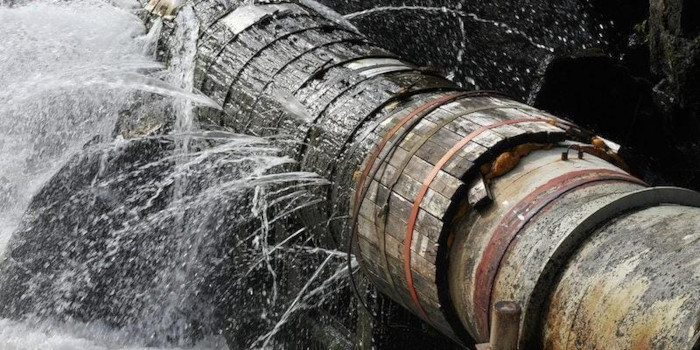
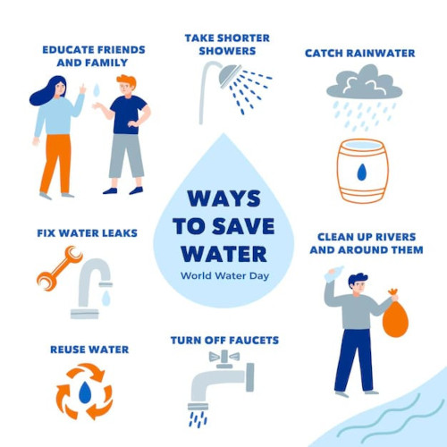
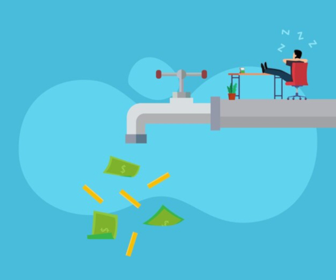
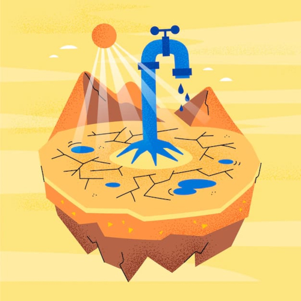
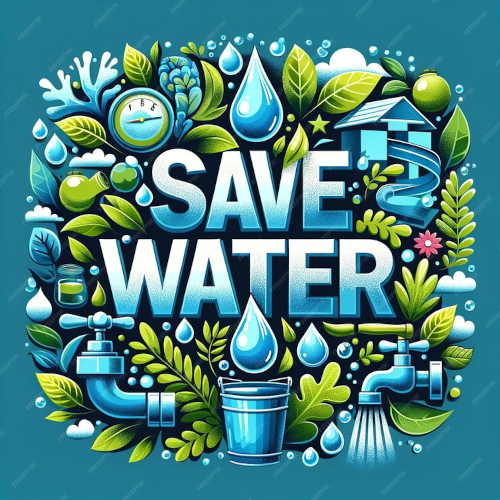
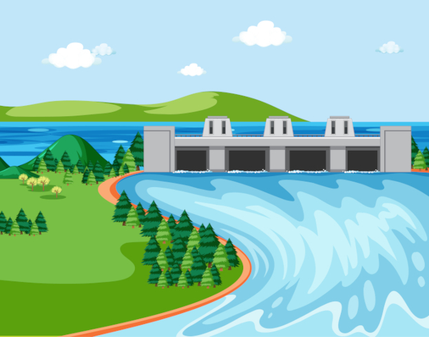

O Desperdício
O desperdício de água no Brasil é um tema de extrema relevância, especialmente considerando que o país possui cerca de 12% de toda a água doce superficial do planeta. Apesar dessa abundância, a má gestão, a infraestrutura precária e a falta de conscientização sobre o uso sustentável desse recurso resultam em índices alarmantes de perdas e desperdícios. A seguir, o grupo Ambienta+ apresenta uma análise detalhada sobre esse problema, suas causas, impactos e possíveis soluções, incluindo opiniões de especialistas para enriquecer a discussão.
Contexto geral
O Brasil enfrenta um paradoxo hídrico: enquanto é rico em recursos hídricos, enfrenta crises de abastecimento em várias regiões. Segundo o Sistema Nacional de Informações sobre Saneamento (SNIS), o país desperdiça cerca de 40% da água tratada durante o processo de distribuição. Isso equivale a mais de 7 bilhões de metros cúbicos de água por ano, o suficiente para abastecer cerca de 63 milhões de pessoas.
Segundo Tasso Azevedo, coordenador do MapBiomas: A abundância de água no Brasil cria uma falsa sensação de segurança, que alimenta práticas insustentáveis e negligencia a importância de conservar esse recurso.
Principais formas de desperdício
Perdas no sistema de distribuição
(Tubulação vazando água)
As maiores perdas ocorrem na infraestrutura de saneamento, onde vazamentos em tubulações antigas e mal conservadas são responsáveis por quase metade do desperdício de água tratada.
Municípios de menor porte enfrentam maiores dificuldades devido à falta de investimentos em redes modernas e manutenção.
Consumo doméstico
(Modos de economizar água em casa)
Desperdício diário
Torneiras abertas desnecessariamente, banhos longos e o uso ineficiente de água em atividades como lavar carros e calçadas representam parte significativa do consumo doméstico.
Falta de conscientização
A ausência de educação ambiental em larga escala perpetua hábitos de desperdício.
Consumo comercial
(Indiferença empresarial quanto ao gasto de água)
Uso na agricultura
Irrigação ineficiente
Apesar de ser responsável por cerca de 70% do uso de água no Brasil, o setor agrícola ainda emprega técnicas pouco eficientes, como irrigação por inundação, que desperdiçam grandes volumes de água.
Poluição dos mananciais
O uso excessivo de pesticidas e fertilizantes prejudica a qualidade da água, tornando-a imprópria para consumo e exigindo maior tratamento.
Indústria e energia
Algumas indústrias utilizam água de forma intensiva, com pouca reutilização. Além disso, usinas hidrelétricas, que respondem por cerca de 60% da energia no Brasil, têm alto consumo de água, gerando preocupações sobre eficiência e impactos ambientais.
Impactos do desperdício
(Ilustração de falta de água em região árida)
Abastecimento insuficiente
Mesmo em regiões ricas em água, como o Sudeste, o desperdício agrava crises de abastecimento, como a que ocorreu em São Paulo em 2014-2015. Populações em áreas semiáridas, como o Nordeste, sofrem ainda mais com a má gestão dos recursos hídricos.
José Galizia Tundisi, especialista em recursos hídricos, explica: A má gestão da água no Brasil não é apenas um problema técnico, mas também uma questão de governança. Sem mudanças estruturais, crises de abastecimento se tornarão cada vez mais frequentes.
Aumento dos custos
O desperdício eleva os custos de captação e tratamento de água, que são repassados ao consumidor. Isso afeta especialmente famílias de baixa renda, agravando desigualdades sociais.
Impactos ambientais
A exploração excessiva de mananciais devido ao desperdício causa desequilíbrios ecológicos, afetando ecossistemas aquáticos e a biodiversidade.
Contribuição para mudanças climáticas
O uso insustentável da água intensifica a emissão de gases de efeito estufa, especialmente em áreas onde a energia é gerada por hidrelétricas e sistemas de tratamento.
Soluções e estratégias
(Ilustração incentivando a economia de água)
Investimentos em infraestrutura
Modernização de sistemas
A substituição de tubulações antigas e a implementação de sistemas inteligentes de monitoramento podem reduzir significativamente as perdas.
Universalização do saneamento básico
Aproximadamente 35 milhões de brasileiros ainda não têm acesso a água tratada. Expansão do saneamento reduziria perdas e aumentaria a eficiência no uso.
Educação ambiental
Campanhas de conscientização sobre o uso responsável da água são cruciais para mudar hábitos em residências, escolas e empresas.
Incentivos fiscais para indústrias e residências que adotem práticas sustentáveis, como a reutilização da água da chuva e o uso de tecnologias de baixo consumo.
Marina Grossi, presidente do CEBDS (Conselho Empresarial Brasileiro para o Desenvolvimento Sustentável), afirma:
A conscientização sobre a água é um passo essencial para o desenvolvimento sustentável. Cada litro economizado representa um avanço em direção à preservação ambiental e à equidade social.
Eficiência na agricultura
Tecnologias modernas: Sistemas de irrigação por gotejamento e técnicas de agricultura de precisão reduzem drasticamente o desperdício.
Políticas públicas
Incentivar práticas sustentáveis por meio de subsídios e treinamento técnico para agricultores.
Reuso e reciclagem
Ampliar o uso de águas residuais tratadas na agricultura, na indústria e até no consumo doméstico é uma solução eficiente e viável.
Incentivar a captação de água da chuva para usos não potáveis em residências e empresas.
Desafios para implementação
(Ilustração de hidrelétrica)
Falta de governança
A gestão fragmentada dos recursos hídricos, com diferentes responsabilidades entre municípios, estados e a União, dificulta ações coordenadas.
Desigualdade regional
Enquanto regiões como o Sudeste enfrentam problemas de infraestrutura, o semiárido brasileiro sofre com a escassez natural, exigindo soluções específicas para cada contexto.
Mudanças climáticas
Secas prolongadas e eventos extremos, agravados pelas mudanças climáticas, aumentam a pressão sobre os recursos hídricos.
Segundo Al Gore, ex-vice-presidente dos EUA e ativista climático:
O uso insustentável da água é um sintoma de um problema maior: nossa incapacidade de tratar os recursos naturais como limitados e preciosos. Precisamos de uma transformação urgente na forma como gerenciamos a água.
Conclusão
O desperdício de água no Brasil reflete tanto uma falha de infraestrutura quanto de conscientização. Resolver esse problema requer um esforço conjunto entre governo, sociedade e setor privado, investindo em tecnologias, políticas públicas e educação. Como disse Antônio Nobre, cientista do INPE:
A água é o sangue da Terra. Cuidar dela é garantir a vida não apenas para nossa geração, mas para todas as futuras.
Com medidas eficazes, é possível transformar a abundância hídrica do Brasil em um exemplo de sustentabilidade para o mundo, preservando este recurso essencial para todos.